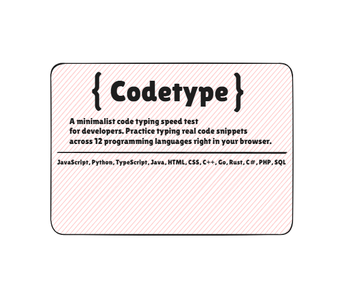
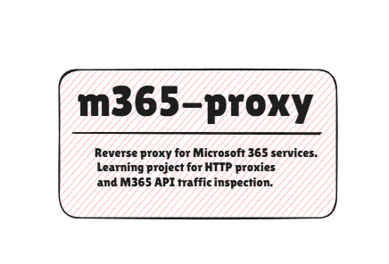

home
stack
setup
projects
blog
news
csmf@arch:~$ ls ~/projects
# projects

codetype
Minimalist typing speed test for developers. Practice with real code snippets across 12 programming languages.

m365-proxy
Reverse proxy for Microsoft 365 services. Learning project for HTTP proxies and M365 API traffic inspection.